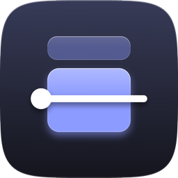

Daybook
A day planner for macOS: from Inbox to calendar.
Daybook is a native Mac app for planning your day. You collect tasks in an Inbox, drag them onto a calendar next to your meetings, and work through the day with a timer in the menu bar. Everything runs on your Mac; there is no Daybook account and no Daybook server.
What it does
- Inbox and lists. Capture tasks from anywhere (⌥Space), sort them into projects, and see Today and This week at a glance.
- Calendar. Your events and your planned tasks on one grid. Drag a task to a time to plan it, resize it to change its length.
- Time slots. Reserve a block of time for a group of tasks and work through them in order.
- Locks. Lock a task, a slot or lunch, and Daybook adds a “Busy” event to the calendar you choose, so other people see that time as taken.
- Check-ins, morning plan and evening review. Short prompts that help you stay on track and close the day.
- Menu bar. The current task and time left, always visible.
Google Calendar
You can connect one or more Google accounts. Daybook then asks Google for two permissions:
- See the list of your calendars (
calendar.calendarlist.readonly) — to show your calendars with their names and colors and let you turn each one on or off. - View and edit events (
calendar.events) — to show your events next to your tasks, to answer invitations from Daybook, to change the time or description of events you organize, and to add, move and remove the “Busy” events for the time you lock.
Daybook only changes something in your Google Calendar when you do something in Daybook (answer an invitation, edit an event, lock or unlock time). Your calendar data stays on your Mac and is never sent anywhere except back to Google. Details are in the privacy policy.
Requirements
macOS 14 Sonoma or later, Apple silicon or Intel. Daybook is currently shared privately and is not available in the App Store.